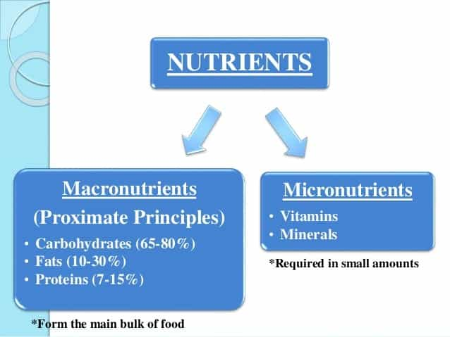
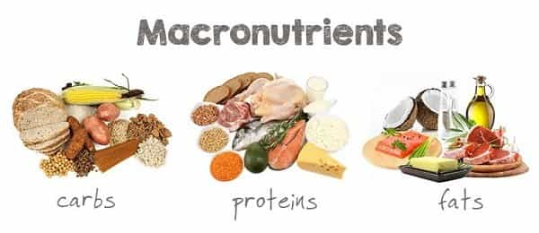
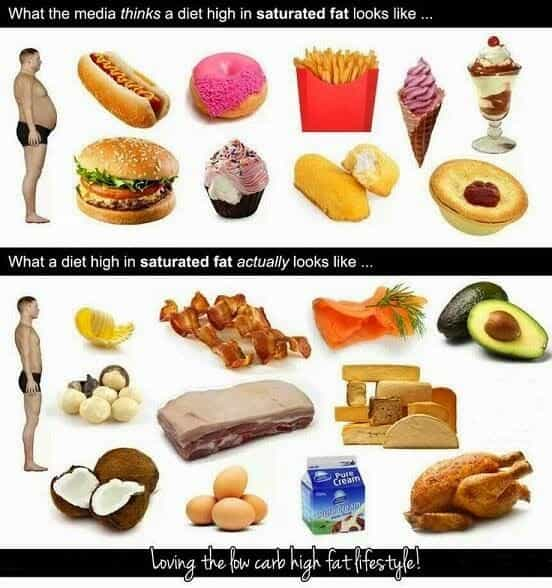
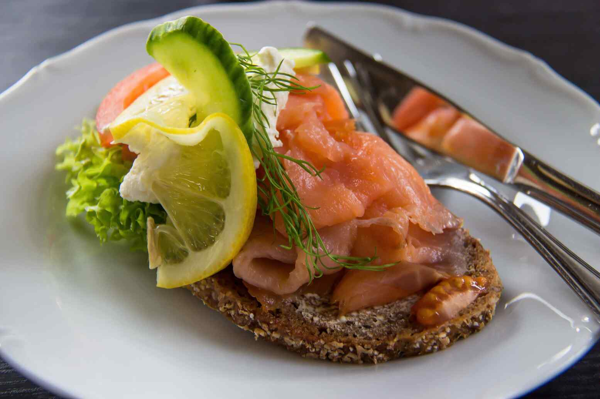
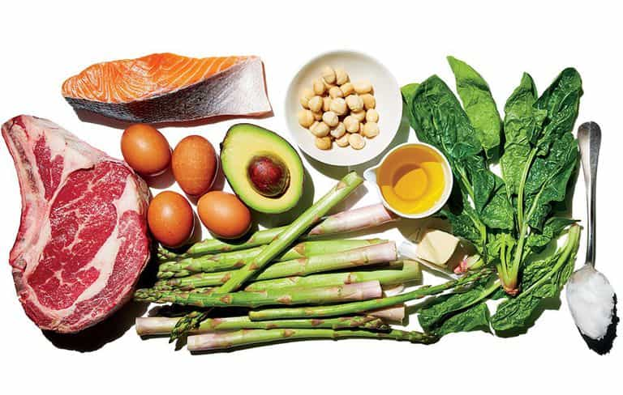
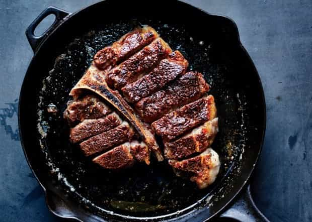

is an aspiring philosopher king, living the dream, travelling the world, hoarding FRNs and ignoring Americunts. He is a European at heart, lover of Latinas, and currently residing in the USA.


The modern American diet continues to obsess about “low-fat” and “low-calorie” foods. The immediate connotation of fat and calories is obesity. But what these words really mean (fats = lipids and calories = energy) is far different from their perception.
Despite multiple studies disproving the myth that low fat foods cause weight loss, I continue to see “low fat,” “low calorie,” and “lite” food products in stores, on menus, and in my friends’ refrigerators. These foods are not only unhealthy, but may end up making you more fat when you consume them.
As Dr. Andrew Weil explains in this 7 minute video, dietary fat does not make you fat.
The key to nutrition, as true with most things in life, is BALANCE.

We eat food for the energy it gives us, as well as the nutrients (vitamins and minerals). The components of food can be separated into two categories: macronutrients and micronutrients. Macronutrients are essential nutrients your body needs daily in large doses. Micronutrients are chemical compounds needed in small doses, and include vitamins and minerals that the body cannot synthesize, and must obtain from diet.

There are only three macronutrients: Carbs, proteins, and fat. They are all 3 necessary and vital. The main problem with the low-fat diet is that it if you reduce any one of the above nutrients, you are increasing the others. While none of the 3 macronutrients is “bad” per se, eating an extremely high carb or high protein diet is just as unhealthy as a high fat diet.
Light sour cream halves the fat, but doubles the carbs and protein.
If you are eating fat free or “lite” foods, you are consuming a high carb or high protein diet. Does this sound like a good idea?
While carbs are one of the three macronutrients, and therefore essential, eating a high carb diet can lead to obesity. Examples of high carb foods include breads and grains, pasta, cereals, beer, beans, legumes, milk, and sugar. Do these sound like foods that will make you lose weight?
High carb foods (white bread, potatoes, pasta, candy bar) often have high glycemic (sugar) indexes. What do high sugar foods do in the body? Convert to body fat.

In fact, cutting carbs is one proven method of reducing weight, as the body first burns carbs, and then fat, for energy, and if carbs are in short supply, it will burn body fat for energy more rapidly.
If you are eating fat-free (think lipid-free) foods, you are very likely eating more carbs, which will make you more fat.

While protein, like fats and carbs, is essential, and increasing protein consumption is helpful in weight training, a high protein diet is linked to kidney and heart problems, can lead to weight gain, and foods high in proteins (dairy, eggs, meats and nuts) have insufficient fiber which can cause digestive and endocrine problems. Fats/lipids, carbs, and protein are all part of a healthy diet.

Dietary fat (lipids) is different from body fat. Lipids contain twice the energy content of proteins or carbs. We eat food primarily for its energy content, and lipids deliver. Lipids are essential for cell membrane fluidity and immune system function, and are necessary for hormone receptors (think testosterone!)
Many scientists posit that inflammation is a major source of illness today, and lipids have strong anti-inflammatory and neuroprotective effects.
High Fat Can Be Healthy
Lipids from unprocessed foods like dairy, avocado, cheese, eggs, fatty fish, nuts, and coconut oil are healthy. Lipids from processed foods such as partially hydrogenated vegetable oils/margarine, fast food, deep fried food, desserts and candies are not healthy.

While I’m skeptical of most fad diets (they typically consist of artificially lowering one of the 3 macronutrients), the ketogenic diet is one that makes a lot of sense. WebMD lists benefits of a high fat, low carb ketogenic diet as weight loss, lower blood sugar, possible anti-cancer benefits, lower heart disease, less acne, less diabetes and epilepsy, and very mild side effects or risks.

Beyond the nutritional reasons to avoid low-fat foods, there is the matter of taste and satiation. If taste didn’t matter, we could just consume multivitamins and protein powders and kale every day, but who wants to do that? Fat is one of the major components in taste. Why does T-bone taste much better than brisket? It has roughly double the fat.
But beyond merely tasting good, fat leads to satiety, or meeting the desire of hunger. When we are no longer hungry, we stop eating. Fat has been proven to increase satiation and thus reduce overall food consumption. When you are full off a steak or even an avocado sandwich, you won’t feel the need to continue eating.
If you take a food and remove its fat, you lose most of the flavor profile. In other words, the food now tastes like crap. So what do fat-free food manufacturers do? Improve the flavor with added carbs and sugars.
Not only is consuming excess sugar very bad for you, and will lead to weight gain, but it has the opposite effect on satiety, particularly in sugar-free fat-free foods, which are the worst. Artificial sweeteners are chemical compounds with no calories. When you eat something sweet, your body expects calories to follow (and sweets are high in calories). But when no calories come, your body is confused and will crave more and more food throughout the day.
Fat free has over 5 TIMES the carbs and sugar
While science tends to support a well balanced diet, and has published guidelines for proper proportions of the three macronutrients, fads and recommendations come and go. The simple answer is what my grandmother told me: eat REAL food.
Eat a proper balance of natural, unprocessed whole foods, exercise, and you, like the generations of those living in the blue zones, will be healthy. Foods like milk and meats are naturally high in fats, and artificially removing those fats destroys the nutritional value of the food. Instead of consuming frankenfoods, limit the foods you eat in each group, and have diversity in your diet.
Read More: Why You Should Consider Planting A Garden
{kind=link}